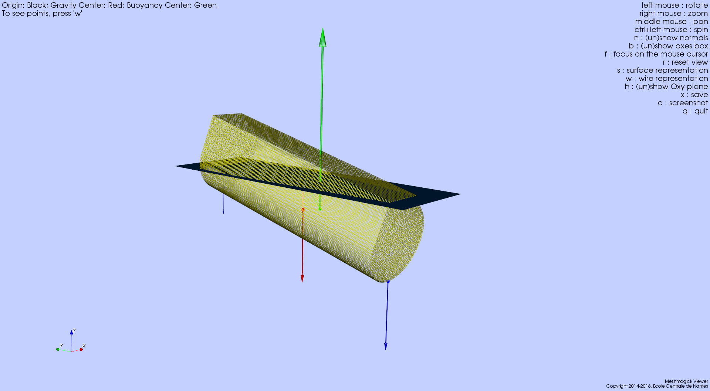

Meshmagick User’s Guide (1.0)¶
Meshmagick is a command line utility as well as a python module for the manipulation of meshes encountered in the hydrodynamics community.
Its primary goal was to be a conversion tool between major file formats for hydrodynamic computations tools (Nemoh, Wamit, Hydrostar or Diodore) and visualization tools (stl, Tecplot, Paraview). It will be particularly useful for code to code comparisons or benchmarking.
Meshmagick also comes with several mesh manipulation capabilities: translation, rotation, scaling, clipping by a plane, symmetry, normals flipping, normals healing (making them consistent across the mesh and outgoing), cleaning (duplicate nodes merging...).
As of the release 1.0, meshmagick provides useful options for hydrostatics computations. It can solve for hydrostatics equilibrium for a given mass, center of gravity or both and provide the clipped mesh to be used by BEM software as well as the hydrostatics parameters (stiffness matrix, position of the center of buoyancy, displacement, draft...).
Meshmagick is primarily a command line utility for everyday hydrodynamicists. However, it also comes with a package that can be imported in a python script and give the full access to the command line options, programmatically.
This picture above has been generated by issuing the following command line:
>$ meshmagick SEAREV.vtp -hs --disp 800 -af 0 -15 -5 0 0 -2000000 -af 0 15 -5 0 0 -6000000 --show
Meshmagick is the property of Ecole Centrale de Nantes and is maintained by François Rongère <francois .rongere@ec-nantes.fr>